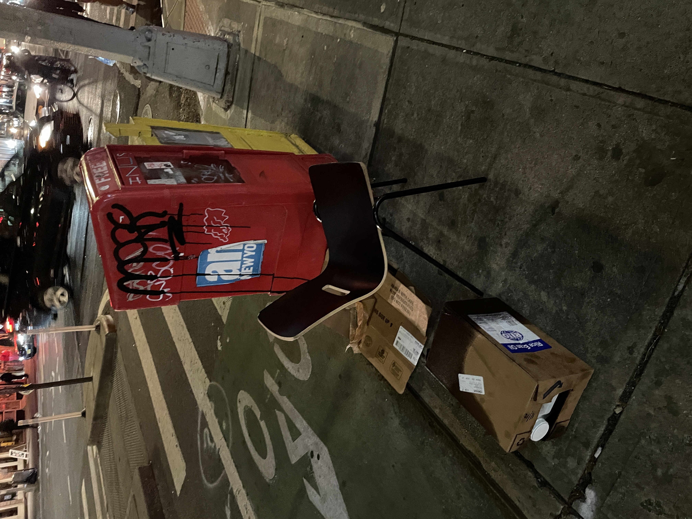
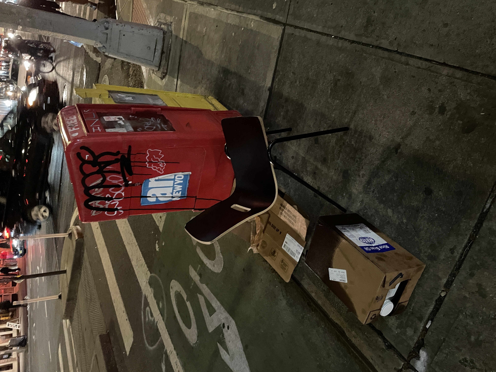

11.29 Prototype 2
CAUTION - IMAGE HEAVY. Hopefully the ratio of words to images in this section will be more balanced than the ones before. No one likes a dry turkey!
The Quest for Objects
Undoubtedly, the only thing I've been able to think about in the past few weeks are discarded objects. I knew there would come a time of reckoning
when I would actually have to practice what I've preached, and I would have to set out and perform the arduous task of collecting. For now, this is
kept at bay. This prototype is a prototype through look and feel, and isn't a final functioning prototype. just yet.
Below are some objects I'd come across in this time.
 


This last one caught my eye. I knew it was worthy based on the questions I had about it. Who did it belong to, and why was it thrown out? Either way, I had to eventually destroy this trophy, which I felt terribly about. The only fair way of going about this is to take it out for some drinks.
Achieving Immortality
In this next part, I photographed Trophy outside my apartment and gave it a good edit session to present it at its best. Accompanying this framed photograph is a receipt which contains snippets of fictional occurences to recall between the shared life of Trophy and its owner/caretaker. One of the lines state... "Only trophy received in 27 year lifetime." Wow, now that's precious. So why was it discarded? Also, did I mention the frame was also found on the street? This is becoming an emsemble of neglected objects, a still life of sorts.
A Final Resting Place
One important element I've neglected to mention until now are the references to funerary practices. This is most evident in the portrait composure of the photographs
as well as the videos, similar to portraits at a memorial service.
It's now time to find a spot for Trophy to reside. But first, Trophy must be broken. Since the majority of the trophy is made of plastic, a good stop was able to
provide the desired effect. I was en route to catch a movie (Licorice Pizza, good but not PTA's best. A lot of elements borrowed from Punch Drunk Love and Inherent Vice),
and I brought the frame along with Trophy with me. I managed to find a suitable spot right by the subway station, so I set up the frame and presented a severely broken
Trophy in front of it. On the frame, I attached the end of life receipt.
I wanted to stay behind to observe passersby's reactions, but I wasn't able to. I would have to come back after the movie to see.


A Fading Memory
I wasn't surprised to come back to an incomplete ensemble. Someone had taken the frame along with the photraph. All that was left was the object, which people passed without
ceremony. There wasn't much more to observe, so I left for my apartment.
By the next morning, Trophy was gone as well.


Interestingly enough, I stumbled upon the picture frame on the way to the subway station. I must've missed it heading from the opposite direction when heading home, as it was tucked behind a trashcan. The frame itself was discarded, but the photograph was missing. Could it be possible someone took it home?

Repeat, But With a Chair
The second iteration here involved a chair. It was found during my morning walk just two blocks from my apartment. I photographed it, took it back home, and ... well, you know the drill.
There is a strange domesticity to a chair. For some reason, the empathy I felt for the chairs was greater than the amount I felt for Trophy. Could it be the size of the object or the amount
of times we interact with them? I'm not sure.

In addition to the photos I took, I also took a video of the before/after object. This video features the broken object, the photograph, and captures them as the camera slowly dollies out. the intent is that as we watch the video, we become more distanced from the object, as if its fading from our memory. Also, dolly shots are fun, and are so satisfying when you get it right. Shout-out to dolly guru Paul Thomas Anderson.
All Together Now
It's at this moment that I realize I'm without photos of the setup. Let me describe it in words, along with a few photos to accompany. The setup involves a screen with
a video of the object pulling away. Alongside this video, is a collection of the receipts on a receipt spike. Each receipt contains a QR code that allows you to scan, and it
will show a photo corresponding to the item on the receipt.
It just so happened that a flower was nearby the table I set up, so I incorporated it into the mix. While the intent wasn't to show the before photo of the object itself, I
had it up to see how it complements the ensemble.

On day two of testing, I made a few improvements and was able to utilize a barcode scanner in the scanning interaction. I also added a few more objects to the mix, with their photos taken not in a before & after style, but rather just the object as they were discovered in their context. From these photos, I'd like to understand if they would ellicit the same emotions as the before/after photos.
Testing Feedback
The setup and way of presenting these objects was really well received. When asking what emotions people felt when interacting with this project, a lot of people mentioned
experiencing grief and sadness. A few drew comparisons between the project and a memorial service, and a few also found the narrative receipts to help personify and give
life to something that they were unfamiliar with. On day two, the scanning of the barcode with a barcode scanner was well received. Someone drew the comparison between the act
of scanning to the act of pulling a trigger, further destroying the objects. Someone else felt this interaction and the result that comes up was unexpected, but in a way that
helps reveal the message.
Some of the improvements suggested having the receipts up on the wall as a way of drawing importance to them. Another suggestion was about adding more informatio to the photos that
come up by overlaying additional text or narratives. Most everyone felt strongly about the before/after photos, and how that pairing should not be altered. The "found object"
photos don't do enough to bring out those same emotions.